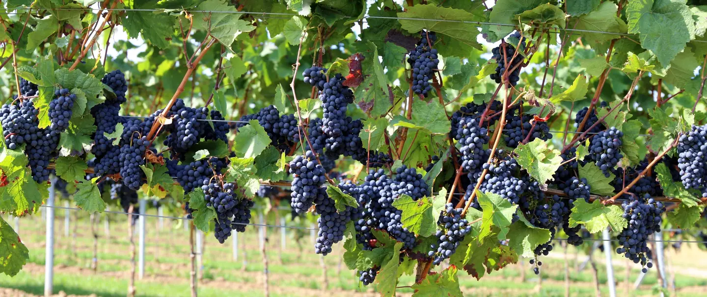

On nous a dit pendant vingt ans de ne pas mettre le rouge au réfrigérateur. Température ambiante, chambrée, autour de dix-huit degrés. C'était l'instruction, répétée par les sommeliers, inscrite dans les guides, transmise comme une règle non négociable. On a obéi. Et on a bu des rouges trop chauds pendant vingt ans, notamment en été, à Marseille, où la température ambiante dépasse les vingt-cinq degrés six mois sur douze.
Ce n'était pas une règle. C'était un héritage d'une époque où les caves étaient à dix-huit degrés, pas les cuisines. La règle s'est déconnectée de la réalité et personne n'a vraiment voulu le dire à voix haute. Aujourd'hui, en 2026, les meilleurs cavistes de France servent leurs Gamay à douze degrés, les Cinsault à quatorze, les Cabernet Franc de Loire à treize. Ce n'est plus un écart, c'est la norme. Il est temps d'en parler.
Ce que la chaleur fait au vin dans le verre
À dix-huit degrés, un rouge léger perd sa tension. L'alcool monte en premier, il prend de la place, il écrase le fruit. Les tanins, qui à bonne température sont une texture, deviennent une sensation sèche et rugueuse. Et l'acidité, qui est ce qui donne de la vie à un vin, disparaît derrière la chaleur comme une voix dans le bruit.
Descendre à douze ou quatorze degrés, c'est l'inverse. L'alcool se calme, il ne cherche plus à s'imposer. Le fruit revient au premier plan, net, précis, sans être masqué. Les tanins s'allègent. Et l'acidité, sur un Gamay ou un Cinsault, devient ce tranchant agréable qui donne envie d'une deuxième gorgée. Ce n'est pas un autre vin. C'est le même vin, enfin lisible.

Cabernet Franc, Loire. Un cépage fait pour être bu frais.
Les cépages qui gagnent au frais
Pas tous les rouges. Un Bandol ou un Cahors n'ont rien à gagner à être servis froids : leurs tanins puissants ont besoin de chaleur pour s'ouvrir, leur structure est faite pour tenir à table, pas pour rafraîchir. La règle s'applique aux rouges légers, à faible extraction, vinifiés sans chercher la puissance.
Le Gamay d'abord, celui du Beaujolais ou de la Loire. C'est le cépage du rouge frais par excellence. Léger en tanins, haut en acidité, arômes de cerise et de pivoine, il est fait pour être bu à douze degrés sur un plateau de charcuterie ou une terrine de campagne. Ensuite le Cinsault, qui pousse partout dans le sud de la France et qui, servi frais, est l'un des vins les plus agréables de l'été méditerranéen. Fruité, salin, presque croquant. Le Pinot Noir aussi, les versions jeunes et sans élevage bois, ceux qui cherchent le fruit plutôt que la complexité.
Et le Cabernet Franc de Loire, celui de Saumur, de Bourgueil, de Chinon. C'est peut-être la meilleure surprise du lot. Servi à treize degrés, il révèle une fraîcheur végétale, une légèreté presque printanière, avec ce fond de poivron rouge grillé et de tuffeau qui lui est propre. À température ambiante en été, il perd tout ça. Frais, il devient un vin d'été parfait.
Le Xinomavro mérite une mention à part. Ce rouge grec de Naoussa, avec ses tanins acérés et son acidité vive, est souvent bu trop chaud, ce qui le rend austère au point de décourager. Servi à quatorze degrés, il se transforme : le fruit cerise séchée monte, les tanins s'arrondissent, la finale saline prend sens. C'est le vin qui gagne le plus au frais, et celui que le moins de gens pensent à mettre au frigo.
Comment le faire sans se tromper
Vingt-cinq à trente minutes dans le réfrigérateur, pas plus. Ce n'est pas un blanc qu'on veut glacé, c'est un rouge qu'on veut frais. La différence entre douze et huit degrés est énorme dans le verre : trop froid, le vin se ferme, les arômes disparaissent, on perd exactement ce qu'on cherchait à préserver. Le but est d'atteindre la fraîcheur, pas de geler la bouteille.
Un autre repère : si le verre commence à se couvrir de buée légère, c'est trop froid. Si la bouteille est à peine plus fraîche que votre main, c'est trop chaud. Le juste milieu, c'est une bouteille agréable à tenir, légèrement fraîche au toucher, qui donne envie de la déboucher tout de suite.
Il y a des gens qui refusent encore d'essayer. Ils ont l'impression de faire quelque chose d'interdit, de brusquer le vin. C'est l'inverse. Le brusquer, c'est le servir à vingt-deux degrés en juillet parce qu'une règle écrite en 1970 dans un château bordelais dit que le rouge se boit chambré. La règle était juste en 1970. En 2026, à Marseille, en juin, la règle c'est : mettez-le au frigo.